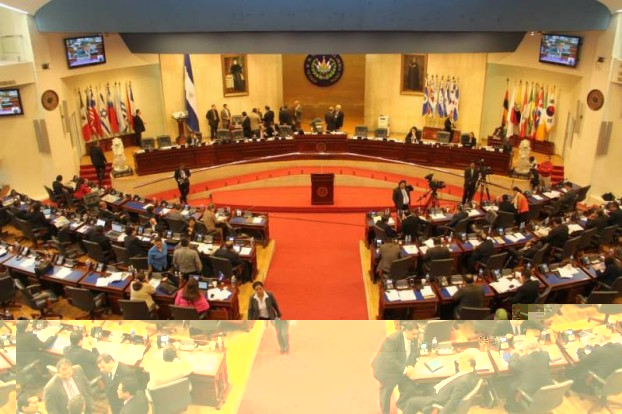

| Nacionales | Buscan financiar plan El Salvador Seguro |
|
¿Impuestos a todos o solo a los millonarios? Propuestas para combatir a los delincuentes
Desde la contribución especial de 10% sobre los servicios de telecomunicaciones, gravar las ganancias de los casinos, hasta que los funcionarios públicos aporten de su salario, todas las propuestas buscan apoyar proyectos de Seguridad.
Durante la última semana, en los pasillos de la Asamblea Legislativa abundaron las reacciones, las propuestas y las sugerencias para financiar los proyectos de seguridad que se espera implementar a través del plan El Salvador Seguro, el cual necesita cerca de $2,000 millones para ser ejecutado.
Uno de los primeros en proponer una medida para financiar las tareas de seguridad fue la fracción de GANA, la cual sugirió que se gravara las ganancias de las telefónicas. Sin embargo hace unos 10 días llegó la propuesta oficial por parte del ministerio de Hacienda y de Seguridad que busca crear una “contribución especial” la cual recaería sobre los usuarios de servicios de telecomunicaciones.
La medida fue duramente criticada por distintos sectores la y no tuvo eco en las fracciones legislativas, ni siquiera en el FMLN que dijo que deberían estar abiertos a estudiar más propuestas.
La creatividad no faltó en los legisladores, quienes presentaron una serie de propuestas de impuestos y contribuciones, que sean alternativa o que mermen el impacto que podría tener una contribución especial generalizada al uso de celular, internet y televisión por cable.
GANA propone gravar con 10% las ganancias de las telefónicas
El diputado de GANA, Guillermo Gallegos, presentó el pasado 25 de agosto una propuesta para elaborar una Ley Especial del Fondo de Seguridad Ciudadana, que busca crear un impuesto específico para las ganancias de las telefónicas. Este consistirá en gravar con un porcentaje del 10% a la totalidad facturada y que este sea destinado para las políticas, planes, programas y proyectos del Ministerio de Seguridad.
El proyecto de ley, asimismo, estipula que se cree una dirección técnica que será la encargada de administrar el fondo y estará adscrita al Ministerio de Seguridad. Esta dirección estará integrada por diversos sectores, como iglesias, empresa privada y autoridades de seguridad.
“Se consume una gran cantidad de minutos telefónicos en el país, muchas de esas ganancias que tienen las compañías, creemos que es conveniente que vaya al tema seguridad”, dijo Gallegos. Asimismo, agregó que “se tendría que poner un candado al proyecto de decreto para que las empresas no puedan trasladar el impuesto a los usuarios”.
Varios diputados reaccionaron a la propuesta a favor y otros se mostraron reacios. Uno de los argumentos que más se manejó es que existe una doble tributación porque ya hay un impuesto al servicio con el IVA y a las ganancias con la renta. No obstante, Gallegos ha argumentado que por eso es una contribución especial que no será manejada por Hacienda por lo que no podría caer en inconstitucionalidad.
La propuesta por ahora espera en la comisión de hacienda de la Asamblea para ser analizada.
PCN propone impuesto a casinos y juegos de azar
El pasado 10 de septiembre, el diputado del PCN, Antonio Almendáriz, propuso que se genere un impuesto para los casinos, bingos y demás juegos de azar para financiar tareas de seguridad. La contribución sería a través de los ingresos que obtengan estos negocios que operan en el país.
“Todos aquellos establecimientos en donde se practiquen juegos de azar, tales como máquinas traga níquel, de cartas o naipes, ruletas, dados y similares, mediante los cuales se obtenga lucro generado por las apuestas en dinero o bienes de cualquier tipo”, reza la pieza sobre los negocios que serían gravados.
El legislador explicó que la motivación para esta moción parte de que otro tipo de empresas trasladarían el impuesto a los usuarios, por lo que al final toda la población terminaría siendo afectada.
“El impuesto no redunda a la población, porque habemos algunos que tememos que gravar a las empresas repercuta en los usuarios. Esto no creo yo que tenga afectado al pueblo salvadoreño”, señaló. Asimismo, Almendáriz ha insistido que es una mejor opción ya que incluso los casinos en sí mismos generan problemas de seguridad.
La pieza precisa que lo recaudado será destinado para el equipamiento, fortalecimiento de armamento material o equipos que requieran la Policía Nacional Civil y la Fuerza Armada.
La propuesta fue enviada a la Comisión de Hacienda, donde se estudiará el porcentaje y los detalles del impuesto.
Gobierno propone aumento del 10% a factura telefónica
 El pasado 17 de septiembre, el ministro de Seguridad, Benito Lara, y el ministro de Hacienda, Carlos Cáceres, presentaron a la Asamblea Legislativa una propuesta de ley de Contribución Especial para la Seguridad Ciudadana y Convivencia, que busca recaudar más de mil millones de dólares en los próximos 10 años.
El pasado 17 de septiembre, el ministro de Seguridad, Benito Lara, y el ministro de Hacienda, Carlos Cáceres, presentaron a la Asamblea Legislativa una propuesta de ley de Contribución Especial para la Seguridad Ciudadana y Convivencia, que busca recaudar más de mil millones de dólares en los próximos 10 años.
Según lo detallado por Hacienda, la contribución se obtendría del pago del 10% del consumo que hacen los usuarios de los servicios telefónicos, de televisión por cable e internet, con lo cual se espera recaudar 140 millones anuales.
La propuesta fue duramente criticada por todos los sectores de la sociedad y hubo un amplio rechazo de las fracciones legislativas a tal medida, que a su criterio afectaría el bolsillo de todos los salvadoreños, incluso de los más pobres, ya que la telefonía se ha convertido en una necesidad en este país donde hay más de 9 millones de celulares, es decir, 1.4 por cada salvadoreño.
Tal es el caso que el partido oficial y el presidente de la República, Salvador Sánchez Cerén, manifestaron que están abiertos a estudiar las distintas propuestas que surjan y que el proyecto de ley tendrá que estudiarse.
No obstante, debido a que se plantea un aumento a la factura de 10%, pocos días después del anuncio, se reveló que la Superintendencia General de Electricidad y Telecomunicaciones (SIGET) estudiaba un nuevo pliego tarifario para las telefónicas, por lo que se esperaba una reducción aproximada del 13%. En este sentido, el impuesto se tomaría de esta reducción.
Por el momento, la propuesta se estudia en la comisión de Hacienda de la Asamblea Legislativa, donde aún existe un amplio rechazo a la medida.
GANA propone gravar a quienes ganen arriba de $500,000
El diputado de GANA, Guillermo Gallegos, presentó el pasado 22 de septiembre una propuesta que pretende implementar una contribución especial a las personas naturales o jurídicas que tengan ganancias anuales arriba de $500,000.
Este gravamen se le aplicaría un 5% a las ganancias y pretende recaudar entre $80 y $100 millones anuales que pasarían directamente a financiar tareas de seguridad.
"La propuesta de GANA lo que busca es gravar a grandes capitales que tengan ganancias de más de $500,000 al año", explicó. Asimismo, dijo que esto tiene que ver con la solidaridad de las empresas y con el compromiso de trabajar por la seguridad.
Sobre la posibilidad que esta medida pudiera declararse inconstitucional, insistió que esta no es una doble tributación. "Esto es una contribución especial y no un impuesto específico; es decir, si se carga en este momento a estas empresas es por renta, por los impuestos que ya tenemos. Esta es una contribución especial que va para un tema definido que es el tema de seguridad", señaló.
El proyecto no ha sido bien recibido por parte de las fracciones legislativas, ya que han señalado que las grandes empresas terminarían trasladando el impuesto a los consumidores. “Están reformando la ley de renta, a mí lo que me preocupa es que en cascada se va a al consumidor final y siempre nos va a caer como un impuesto más”, declaró la diputada tricolor y miembro de la comisión de Hacienda, Milena de Escalón.
Otra de las críticas es que también podría ser declarada inconstitucional debido a una posible doble tributación. La propuesta fue llevada a la comisión de hacienda en la plenaria pasada.
PCN propone Estado venda bonos
.jpg) El PCN propuso este 24 de septiembre una nueva Ley de Emisión de Bonos para la Seguridad Ciudadana, que pretende que el Estado salvadoreño emita bonos hasta por $200 millones y sean vendidos para cualquiera que quiera contribuir y de esta manera se obtengan fondos para financiar los planes de seguridad.
El PCN propuso este 24 de septiembre una nueva Ley de Emisión de Bonos para la Seguridad Ciudadana, que pretende que el Estado salvadoreño emita bonos hasta por $200 millones y sean vendidos para cualquiera que quiera contribuir y de esta manera se obtengan fondos para financiar los planes de seguridad.
Los bonos se pagarían 10 años después de ser emitidos y se pagarán con un 5% interés anual al portador y se establecerán distintos rangos. La propuesta estipula que haya bonos de $5, $10, $20, $50, $100, $1,000, $5,000 y $10,000.
“Al momento de comprarlos no solamente va a estar ayudando el pueblo dando recursos para la seguridad pública, porque se llaman bonos para la seguridad ciudadana, sino que está haciendo un negocio porque a la vuelta de 10 años le va a dar el interés del 5%. Entonces, usted le está prestando dinero al Estado pero generándole mayor interés”, explicó el diputado Antonio Almendáriz.
Asimismo argumentó que no es la primera vez que el Estado recurre a esta medida. La primera vez se implementó por el presidente Fidel Sánchez Hernández para financiar el conflicto armado con Honduras en 1969. “Los bonos son una inversión que hace el salvadoreño, no es regalo, no es impuesto, sino que no es una inversión que hace que ayuda al Estado en ese momento”, agregó.
Por su parte, el diputado Mario Ponce destacó que esta es la manera más rápida en que el Estado puede obtener los recursos, por lo que la considera la propuesta más viable.
Esta propuesta fue mucho mejor recibida por los legisladores. A criterio de Gallegos, esta debe estudiarse. “Recibimos con agrado la propuesta del PCN la vamos a analizar y estudiar y al final pues tendrá que salir algo de la comisión que podrá dotar de recursos a la policía y al ejército”, declaró.
Por su parte, De Escalón aseguró que frente a las propuestas de nuevos impuestos prefiere que se implementen los bonos. “Por qué no contribuimos todos con una pequeña ganancia a través de un bono. A mí por lo menos eso es lo que más me parece que es lo más justo”, declaró.
PDC pide que se descuente de los salarios de funcionarios
El Partido Demócrata Cristiano (PDC) propuso el pasado jueves en la plenaria que los funcionarios públicos contribuyan en forma directa tanto a la prevención como al control de la delincuencia, a través de descuentos a sus salarios. La medida sería aplicada a los funcionarios de los tres órganos del Estado y al personal de las municipalidades.
El diputado del PDC, Rodolfo Parker, expuso que esta propuesta se haría de manera escalonada mediante una tabla diferenciadora. Así: quienes ganen arriba de $1,500 hasta $2,000 se les descontará un 3%; a los que ganen entre $2,000 y $2,500 se les aplicaría un descuento del 5%; a los que ganen entre $2,500 y $3,000 se les restaría el %7 y para los que ganen arriba de $3,000 la contribución sería de un 10%.
“Somos los primeros llamados a responsabilizarlos para enfrentar la delincuencia tanto en el ámbito preventivo como en el combate a ella. Somos los que más información manejamos y somos los primeros llamados a dar el ejemplo”, señaló Parker.
Esta media de ser aprobada sería aplicada por un periodo de cinco años, según lo expone la propuesta. Asimismo, estipula que los recursos recolectados serán destinados para el Ministerio de Justicia y Seguridad para la ejecución de los planes operativos en el combate a la delincuencia, incluyendo los programas de reinserción y readaptación.
La propuesta fue bien vista por algunos diputados, pero otros no la vieron con muy buenos ojos.
“De poco en poco también podemos sumar una cantidad de dinero que sirva para la seguridad y si nos toca a nosotros como funcionarios poder aportar de parte de lo que nosotros ganamos. Yo en lo personal, y solo puedo hablar por mí y no por el grupo parlamentario de GANA, estaría de acuerdo en hacer este aporte”, sentenció Gallegos.
“Aquí cada quien está siendo creativo. Nosotros como FMLN tenemos cerca del 50% del salario lo dedicamos a un fondo de becas que creemos que es una medida preventivas que ayuda a que no haya violencia”, sentenció el diputado FMLN, Rolando Mata.
Tanta controversia causó que la propuesta de Parker no ingresara en la plenaria pasada, ya que solo obtuvo 8 votos para ingresar la propuesta como pieza de correspondencia. No obstante, ingresó la pieza a través de ventanilla, como es el trámite ordinario.
ARENA propone comisión ad hoc
 El partido tricolor propuso en el pleno el jueves pasado crear una comisión ad hoc para definir las prioridades de inversión, programación de ejecución anual, metas y forma de financiamiento del plan del gobierno El Salvador Seguro.
El partido tricolor propuso en el pleno el jueves pasado crear una comisión ad hoc para definir las prioridades de inversión, programación de ejecución anual, metas y forma de financiamiento del plan del gobierno El Salvador Seguro.
La propuesta fue ingresada en la plenaria; sin embargo, no obtuvo los votos necesarios. Por lo que no pudo ser estudiada en el pleno, pero deberá seguir el trámite ordinario. Ante esto, los diputados de ARENA ofrecieron conferencia de prensa tras el rechazo y lamentaron no haber obtenido los votos.
En este sentido, el diputado Rodrigo Ávila explicó que en esta comisión se pueden estudiar las distintas propuestas que en materia de seguridad han presentado los diferentes grupos parlamentarios y aplaudió que el gobierno por fin reconozca que el problema número uno del país es la inseguridad.
“En la comisión lo que buscaríamos sería tener los consensos necesarios para definir las prioridades de inversión, programación, de ejecución anual, metas y formas de financiamiento del plan El Salvador Seguro porque es aquí en la Asamblea donde nos debemos poner de acuerdo para las reformas y reorientaciones de fondo”, expuso en la conferencia la diputada Milena de Escalón
Sin embargo, la moción será estudiada posteriormente por la junta directiva, quien es la encargada de crear las comisiones.
Noticias Relacionadas:
| Enviar a un amigo | Imprimir | Compartir |
|
Lizerlig: quieren acabar con la delincuenncia PIDAN AYUDA INTERNACIONAL. | 2015-09-28 21:45:58
Los funcionaros publicos se estan quedando con los impuestos | 2015-09-28 20:07:54
Cuidado | 2015-09-28 18:53:29
KLABER | 2015-09-28 16:40:07
romel | 2015-09-28 14:51:35
VAYAN A JALAR CHORIZO MEJOR | 2015-09-28 14:39:25
Un referendum! | 2015-09-28 14:22:56
YO PROPONGO QUE NOS VAYAMOS TODOS A LA CHINGADA PARA LA USA. | 2015-09-28 14:03:10
VIADELGADO 2 | 2015-09-28 13:17:22
que paguen los que nunca han pagado nada | 2015-09-28 12:57:49
maria | 2015-09-28 12:54:55
VIADELGADO 1 | 2015-09-28 12:51:21
Que pague mas el que mas tiene!!!!!!!!!!!! | 2015-09-28 12:11:41
nestor torres | 2015-09-28 12:04:08
CONTROL DEL GASTO | 2015-09-28 11:55:33
LO MÁS LEÍDO |
LO MÁS COMENTADO |
Eligen a la Miss BumBum 2015
Presentan nueva denuncia contra hospital Ginecológico por caso de bebés cambiados
Desmantelan troll center en el que se clonó página web de La Prensa Gráfica
Familia obligaba a seis de sus miembros a prostituirse
Familias huyen de sus casas porque de lo contrario la bestia los llegará a asesinar
Finaliza jornada de audiencia contra Francisco Flores y se reanudará mañana
Difunden imágenes de supuestos pandilleros que operan en Lourdes y otras de mareros de San Miguel

Entrevista con diputado de ARENA
Portillo Cuadra: El FMLN y sus aliados quieren tomarse la empresa privada y ser ellos los empresarios
El diputado de la fracción tricolor reacciona ante las posturas que se identificaron como grandes lineamientos en la pasada Convención del partido oficial.OPINION
|
|
Pastor Toby jr. |
|
|
Geovani Galeas |
|
|
Melvin González Los evasores de impuestos no son "perseguidos políticos", son criminales según la ley |
|
|
Marvin Aguilar |
ENCUESTA
¿Crees que debe castigarse con cárcel a quienes no paguen impuestos al Estado? |